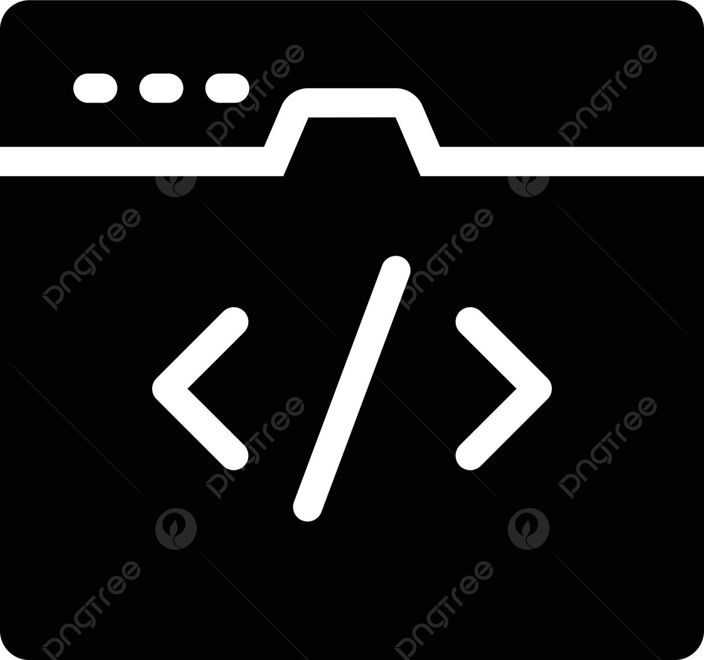

• FDD (Feature Driven Development)
O FDD é um processo ágil, iterativo e incremental, focado em entregar funcionalidades “features” com valor para o cliente em ciclos curtos. Nasceu em 1997–1998 em um projeto bancário em Singapura, liderado por Jeff De Luca, com forte influência de Peter Coad em modelagem de domínio (UML). O método consolidou-se em cinco processos base (modelar, listar, planejar, desenhar e construir), acompanhados por práticas de engenharia e relato de progresso objetivo.
• XP (eXtreme Programming)
Metodologia focada no desenvolvimento de software com valores e princípios que guiam os envolvidos e se complementam, focando na agilidade das equipes e qualidade dos projetos. O conjunto de valores guiam as práticas e interações das equipes e certificam um processo de desenvolvimento eficaz
• MSF (Microsoft Solutions Framework)
Possui foco em soluções completas, integrando arquitetura, infraestrutura, operações e negócios. Prioriza os impactos sobre riscos e valor de negócio, define o responsável por cada setor e divide o trabalho em iterações que reduzem dúvidas. O MSF adapta o framework ao tamanhos do projeto e a maturidade organizacional, foca na qualidade e reduz surpresas.
• Crystal
A metodologia Crystal é uma família de metodologias adaptáveis, que varia conforme o tamanho da equipe e o nível de criticidade do projeto. Por isso, o Crystal é considerado um método ágil leve e flexível, com ênfase em comunicação, interação humana e entrega frequente de software funcional. O nome "Crystal" vem da ideia de diferentes cores de cristal representarem diferentes "pesos" metodológicos: quanto maior a equipe ou mais crítico o projeto, mais “robusto” deve ser o conjunto de práticas.
• Kanban
Os princípios fundamentais do Kanban discorre que é preciso começar com o que é feito hoje, não exigindo mudanças radicais imediatas, buscar mudanças evolutivas e promover a melhoria continua, respeitar os papeis e responsabilidades e incentivar a liderança em todos os níveis. O Kanban é uma metodologia ágil de gestão de fluxo de trabalho que surgiu no Sistema Toyota voltado para o controle de estoques e processos de manufatura.